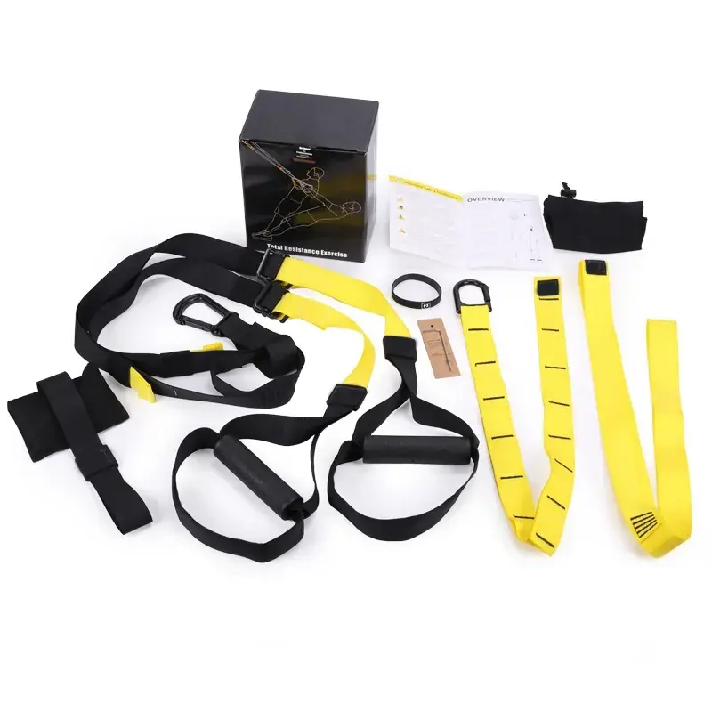

Kit de entrenamiento en suspensión con anclaje para puerta, asas acolchadas, soportes para los pies y bolsa de transporte. El color de las correas y la marca se determinan según el pedido.
| Espesor | personalizable |
|---|---|
| Cantidad mínima de pedido | 100 unidades |
| Cumplimiento normativo | ROHS / CE / ISO 9001 / BSCI / REACH |
Se fija a una puerta, una viga o la rama de un árbol, y convierte el peso corporal en una carga totalmente ajustable: sin soporte, sin discos ni espacio en el suelo. El kit se envía completo: correas principales con marcas de ajuste cosidas, asas acolchadas, soportes para los pies, anclaje para puerta, bolsa de transporte de malla, guía de entrenamiento impresa y una caja de color con la marca.
Asistencia completa en OEM/ODM: material, tamaño, grosor, color, bicolor, impresión de logotipos, relieve y embalaje. Muestras físicas listas en 7 días según tus especificaciones.
Para tiendas de equipamiento de gimnasio doméstico, centros de entrenamiento personal, gimnasios de hoteles y tiendas online.
Solicita hoy mismo un presupuesto personalizado y muestras gratuitas.
Ponte en contacto con nuestro equipo